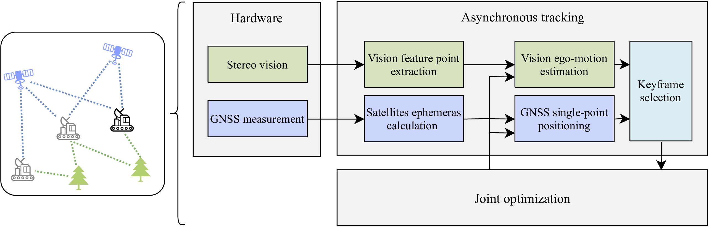
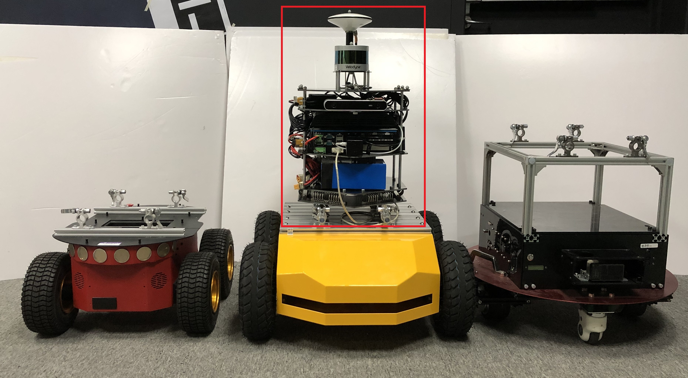
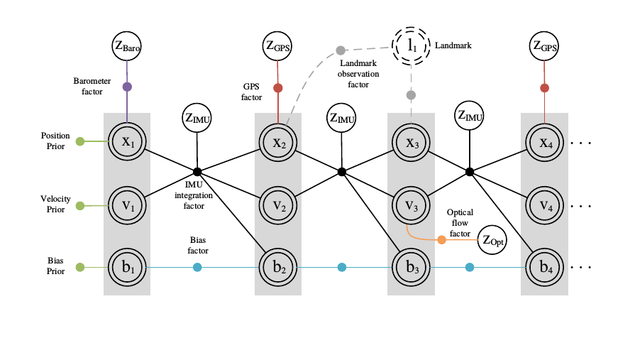
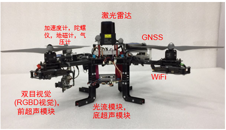

关于
龚正
博士生, 上海交通大学类脑智能应用技术研究中心
研究领域：多源导航与定位，视觉SLAM，自主无人系统
Projects
- 视觉与卫星紧耦合融合系统：GNSS与视觉SLAM系统紧耦合联合解算的算法。

可重配置载体的多传感器数据采集平台：一种可适用于多种载体的多传感器数据采集平台，包括了硬件及软件栈设计。

基于因子图优化的多传感器融合系统：区别于传统滤波方法的全局优化融合算法。

自主四轴无人飞行器：基于多传感器融合系统及视觉定位，可在室内外进行自主飞行

Publications & Patents
Z. Gong, R. Ying, W. Fei, J. Qian and P. Liu, “Tightly Coupled Integration of GNSS and Vision SLAM Using 10-DoF Optimization on Manifold ,” in IEEE Sensors Journal. doi: 10.1109/JSEN.2019.2935387
Gong，Z., et al., “Design of a Reconfigurable Multi-Sensor Testbed for Autonomous Vehicles and Ground Robots,” 2019 IEEE International Symposium on Circuits and Systems (ISCAS), Sapporo, Japan, 2019, pp. 1-5.
Gong, Z., Liu, P., Liu, Q., Miao, & Ying, R. “Graphical Approach for MAV Sensors Fusion,” Proceedings of the 31th International Technical Meeting of the Satellite Division of the Institute of Navigation (ION GNSS+ 2018).
Gong, Z., Pei, L., Zou, D., Miao, R., Liu, P., & Yu, W. “Tightly Coupled GNSS with Stereo Camera Navigation Using Graph Optimization,” Proceedings of the 29th International Technical Meeting of the Satellite Division of the Institute of Navigation (ION GNSS+ 2016).
F. Wen, R. Ying, Z. Gong and P. Liu, “Efficient Algorithms for Maximum Consensus Robust Fitting,” in IEEE Transactions on Robotics. doi: 10.1109/TRO.2019.2943061
R. Sun, J. Qian, Z. Gong and P. Liu, “A flexible and efficient real-time ORB-based full-HD image feature extraction accelerator” in IEEE Transactions on Very Large Scale Integration Systems
(投递中) Y. Zhao, R. Ying, Z. Gong , W. Xue and P. Liu, “Semantic Probabilistic Traversability Map Generation For Robot Path Planning and Navigation” in The IEEE International Conference on Robotics and Biomimetics (ROBIO 2019) *
(投递中) W. Xue, R. Ying, Z. Gong and P. Liu, “SLAM-based Robot Navigation System with Trajectory Topological Map and Ball VFH”
裴凌,刘东辉,龚正,赵毅.智能移动平台融合定位技术综述[J].导航定位与授时,2017,(5):8-18
龚正,应忍冬,刘佩林,薛午阳,赵忆漠,缪瑞航. 一种定位数据采集方法及系统、平台、介质: （申请中）
龚正,应忍冬,刘佩林,薛午阳,缪瑞航 卫星与视觉紧耦合定位方法，系统及介质: 中国, CN201910882637.0
薛午阳, 应忍冬, 刘佩林, 龚正, 缪瑞航. 基于轨迹拓扑地图和避障的车辆导航方法、系统及介质: 中国,CN201910661485.1
薛午阳,应忍冬,赵忆漠,龚正,缪瑞航,刘佩林. 基于语义-高度地图的局部导航方法: （申请中）